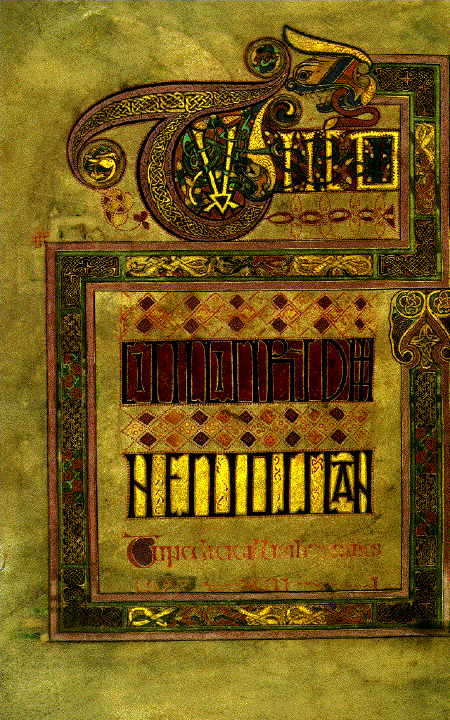
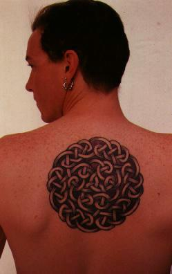
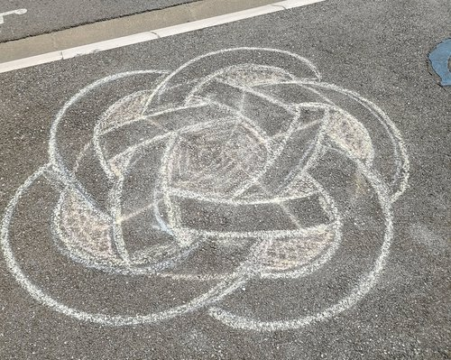
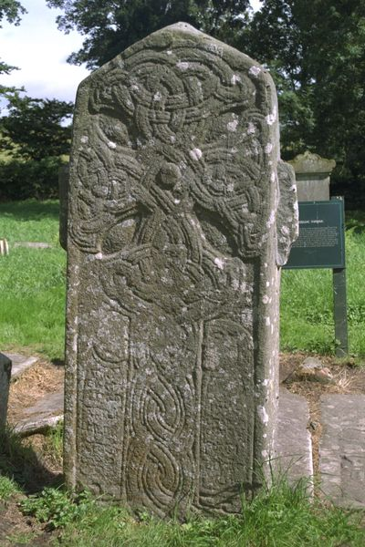
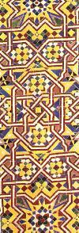
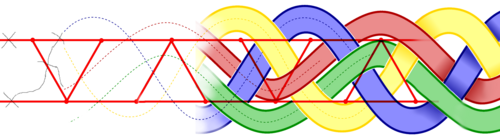
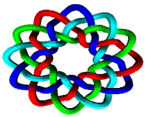
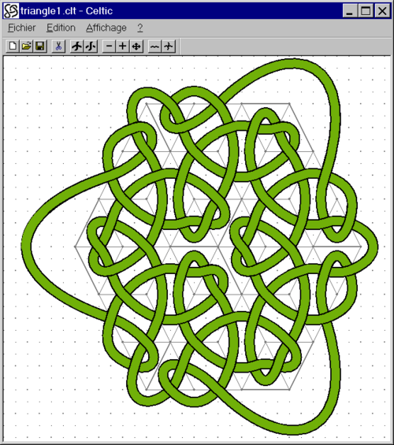

 Vielleicht sind Sie an keltischen Knoten interessiert, weil Sie die illustrierte Seite einer Bibel aus dem Mittelalter gesehen haben, wie z.B. das Book of Kells, welches sich im Trinity College in Dublin befindet.
In einer Stunde sind Sie selber fähig solche Knoten, wie diejenigen auf dieser Seite, die ich für einen Artikel im Pour la Science, (calligraphie Chantale Fachinetti) erstellt habe, zu entwerfen.
{kind=link}
 Heutzutage ist es Mode sich ein Tatoo machen zu lassen. Wenn der Junge eine Strasse weiter zwar sympatisch ist, ist er jedoch sicher nicht so begabt wie Pat Fish (siehe rechtes Bild) und Sie wären besser bedient gewesen, wenn Sie Ihr Motiv selbst gezeichnet hätten.
Sie können sogar auf dem Bürgersteig zeichnen, auf die #StreetMath Art und Weise.
 In Irland belegen alte Steine, dass solche Motive nicht nur einfach der letzte Schrei der Mode sind.
{kind=link}
 Da uns unser Ethnozentrismus dazu treibt, alle Motive auf der Basis von Flechtwerk als keltisch zu bezeichnen, muss man aus Bescheidenheit trotzdem noch anmerken, dass solche Motive auch in Indien, Afrika und anderswo alltäglich sind. Vor allem die arabische Kunst treibt diese ornamentale Technik zu Höhen der Perfektion, die die Fähigkeiten der Mönche Irlands bei weitem übertrifft. Besuchen Sie doch die wunderbare Seite von Craig Kaplan zu dieser Frage.
Ziel
Dieser Kurs wird Ihnen in einer Stunde zeigen, wie man solche Motive zeichnet, existierende Motive kopiert und sogar eigene Flechtwerke entwirft. Die Technik ist im folgendem Bild zusammengefasst:  Ein Graph, in Rot, kodiert einen Knoten. Um den Knoten zu konstruieren, platziert man Kreuzungen in der Mitte jeder Kante. Eine einfache "Rechte Hand"-Methode (wie im Labyrinth, aber Sie werden sich in diesem Tutorial sicher nicht verirren!) wird Ihnen erlauben daraus ein kleines Stück eines Zopfes zu erzeugen, das Sie anschließend noch glätten müssen. Danach erlaubt Ihnen eine weitere einfache Methode bei jeder Kreuzung zu entscheiden, welcher Strang unten und welcher oben ist. Danach muss man nur noch das Flechtwerk zu einer gewunden Strasse zu verbreitern, et voilà!
{kind=link}
Aidan Meehan. Es sei hier noch angemerkt, dass ich nur eine Technik der keltischen Buchmalerei beschreibe. Wenn Sie noch andere erlernen wollen, kaufen Sie am Besten das Buch von Aidan Meehan. Cari Buziak macht ebenso wunderschöne Sachen.


Die beschriebene Methode ist sogar so einfach, dass sogar ein Computer sie ausführen kann. Die besten Umsetzungen sind KnotPlot, KnotScape, Steven Abbott und KnotsBag.
Steven Abbott (windows, kaputt link), Géraud Bousquet (wunderbare Umsetzung, für Mac OS, Linux und Windows) David Legland (java applet/appli) und Thomas Guionnet gemacht worden.

Dieses Tutorial nahm seinen Anfang in zwei Kursen, die ich in der Alcuin Schule für Kalligraphie, Saint Cyr sur Loire in den Jahren 1994 und 1996 gegeben habe. Ich danke Richard Forestier, Chantale Facchinetti und Agnès Forestier für die Liebenswürdigkeit und die Geduld, mich beherbergt und unterstützt zu haben. Ohne ihre Aufmerksamkeit, ihr Interesse am Thema und ihre Begeisterung für gut gemachte Arbeit hätte dieses Tutorial niemals das Licht der Welt erblickt. Dank Ihnen habe ich es von einer (nur) für einen Mathematiker selbstverständlichen Sprache in eine allgemeinverständliche übersetzt. Ich möchte ihnen hiermit danken.